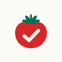

TomatoPolítica de privacidade
Última atualização: 27 de novembro de 2026
O Tomato é um app de acompanhamento nutricional para o Reino Unido, os EUA e o Brasil. Você tira uma foto da refeição, uma IA estima a nutrição e você pode responder perguntas rápidas para deixar a estimativa mais precisa. O Tomato oferece estimativas gerais de bem-estar, não conselho médico.
Quem somos
O Tomato é mantido pela equipe Tomato. Somos o "controlador" dos seus dados pessoais, ou seja, decidimos como eles são usados.
Fale conosco sobre privacidade, ou sobre qualquer item desta política, pelo e-mail onpowerbr@gmail.com.
Quais dados o app coleta
O Tomato coleta apenas o necessário para estimar suas refeições e acompanhar seu dia. Você não precisa informar nome, e-mail ou telefone para usá-lo.
| Dado | Exemplos | Onde fica guardado |
|---|---|---|
| Conta de convidado | Um código aleatório criado quando você abre o app pela primeira vez, e um token de acesso no seu celular | Nosso banco de dados (Supabase, região do Reino Unido) e seu celular |
| Respostas do perfil | Objetivo, idade, sexo usado na fórmula de energia (ou "prefiro não dizer"), altura, peso, nível de atividade, unidades, as metas diárias calculadas a partir disso e a data em que você concordou com esta política | Nosso banco de dados |
| Fotos de refeições | A foto que você tira ou escolhe, reduzida no seu celular antes do envio | Enviadas ao nosso provedor de IA para análise e depois descartadas. Não guardamos suas fotos |
| Registros de refeições | Alimentos identificados, porções, estimativas de calorias e nutrientes, suas respostas às perguntas, nível de precisão, pontos, data e hora | Nosso banco de dados |
| Suas próprias palavras | Descrições que você digita (por exemplo "feito na manteiga") e correções de ingredientes | Nosso banco de dados, e enviadas ao nosso provedor de IA junto com a foto |
| Registros de uso e custo | Quando cada foto foi analisada, quanto tempo levou, o custo da IA, se funcionou e o último dia em que você usou o app | Nosso banco de dados |
| Só no seu celular | Idioma escolhido, agenda de lembretes e permissão de notificações | Seu celular; nunca são enviados para nós |
Não coletamos sua localização, contatos, microfone ou ID de publicidade, e o app não tem anúncios nem rastreadores de publicidade.
Como usamos os dados, e por que podemos usá-los
Usamos seus dados apenas para fazer o Tomato funcionar para você. Não vendemos seus dados, não os usamos para publicidade e não os compartilhamos para criar perfis sobre você.
| O que fazemos | Dados usados | Base legal (LGPD · GDPR do Reino Unido/UE) |
|---|---|---|
| Estimar a nutrição de uma foto de refeição e fazer perguntas | Foto da refeição, suas descrições, idioma | Seu consentimento específico e destacado para tratar dados relacionados à saúde (LGPD art. 11, I · GDPR art. 9(2)(a)), dado ao tocar em "Concordar e começar" no fim das perguntas iniciais, antes da sua primeira foto |
| Registrar refeições e mostrar seu dia, histórico, gráficos, pontos e sequências | Registros de refeições | Execução do serviço que você pediu (LGPD art. 7, V, e art. 11, I para dados de saúde · contrato no GDPR) |
| Calcular metas diárias | Respostas do perfil | Seu consentimento (como acima), porque peso e objetivos podem ser dados de saúde |
| Lembrar você de perguntas não respondidas | Registros de refeições, agenda de lembretes no seu celular | Seu consentimento, dado quando o Android ou iOS pede para permitir notificações; você pode desativar nas configurações do celular |
| Manter o serviço seguro e viável (limites diários de fotos, limites de gastos, prevenção de abuso) | Conta de convidado, registros de uso e custo | Nosso legítimo interesse em manter o serviço funcionando (LGPD art. 7, IX) |
| Corrigir problemas e melhorar a precisão | Registros de uso e de refeições | Nosso legítimo interesse (LGPD art. 7, IX) |
Você pode retirar seu consentimento a qualquer momento apagando sua conta no app (Perfil, depois "Apagar minha conta e meus dados"). A retirada do consentimento não afeta o que já foi feito antes.
Com quem compartilhamos
Usamos alguns prestadores de serviço para operar o Tomato. Eles tratam os dados apenas conforme nossas instruções, sob contratos de tratamento de dados.
| Prestador | O que faz para nós | Dados que trata | Onde |
|---|---|---|---|
| Supabase | Banco de dados, acesso como convidado e as funções de servidor que operam o app | Tudo o que fica no nosso banco de dados | Reino Unido (Londres) |
| Anthropic (IA Claude) | Analisa as fotos de refeições e suas descrições | Fotos de refeições, suas descrições, idioma | Estados Unidos |
| Expo (EAS) | Entrega as atualizações do app no seu celular | Dados técnicos necessários para entregar uma atualização, como versão do app e tipo de aparelho | Estados Unidos |
| Google Play e Apple App Store | Distribuem o app | Dados cobertos pelas políticas de privacidade deles | Locais próprios |
A Anthropic não usa as fotos e textos que enviamos para treinar seus modelos de IA e os guarda apenas por um tempo limitado, para segurança e prevenção de abuso, conforme seus termos comerciais.
Transferências internacionais. Enviar fotos para a Anthropic e pedidos de atualização para a Expo transfere dados para os Estados Unidos. Para usuários no Brasil, essas transferências seguem as salvaguardas do art. 33 da LGPD; no Reino Unido e na UE, usamos o Adendo de Transferência Internacional de Dados do Reino Unido e as Cláusulas Contratuais Padrão da UE.
Também podemos compartilhar dados se a lei exigir, ou para proteger a segurança das pessoas.
Por quanto tempo guardamos, e como apagar
Guardamos seus dados enquanto você usa o Tomato, e os apagamos quando você apaga sua conta.
- Apague tudo você mesmo, quando quiser: no app, vá em Perfil e depois em "Apagar minha conta e meus dados". Isso apaga na hora e para sempre sua conta de convidado, seu perfil, seus registros de refeições e os registros de análise de fotos. Não dá para desfazer.
- Contas inativas: apagamos automaticamente as contas que não abriram o app nem registraram uma refeição por 24 meses, junto com todos os seus dados.
- Backups: dados apagados podem permanecer em backups criptografados do banco de dados por até 7 dias, até serem sobrescritos.
- Desinstalar o app remove os dados do seu celular, mas não os dados do nosso banco. Apague sua conta antes, se quiser que eles também sejam removidos. Como você usa o Tomato como convidado, não conseguimos reconectar você aos dados antigos depois de uma desinstalação.
Segurança. Os dados trafegam criptografados (HTTPS) e ficam guardados no banco de dados criptografado do Supabase. Regras do banco permitem que cada conta de convidado leia e altere apenas suas próprias refeições e seu perfil. Nossa chave do serviço de IA fica no servidor e nunca é colocada no app.
Seus direitos
Onde quer que você more, pode ver, corrigir, baixar ou apagar seus dados. Apague você mesmo no app, ou escreva para onpowerbr@gmail.com para qualquer outra coisa; respondemos em até 15 dias no Brasil (30 dias nos demais países).
- Brasil (LGPD): confirmação de que tratamos seus dados, acesso, correção, anonimização ou eliminação de dados desnecessários, portabilidade, informação sobre com quem compartilhamos e retirada do consentimento. Você pode reclamar à ANPD (Autoridade Nacional de Proteção de Dados).
- Reino Unido e UE (GDPR): acesso, correção, eliminação, restrição, portabilidade, oposição ao tratamento baseado em legítimo interesse e retirada do consentimento. Você pode reclamar ao ICO (ico.org.uk) no Reino Unido, ou à autoridade de proteção de dados do seu país na UE.
- Estados Unidos: dependendo do seu estado (por exemplo Califórnia, Colorado, Virgínia, Washington), você pode saber, acessar, corrigir e apagar seus dados. Não vendemos nem "compartilhamos" dados pessoais para publicidade direcionada. A lei My Health My Data de Washington e leis parecidas protegem dados de saúde: só os coletamos com seu consentimento, e você pode apagá-los a qualquer momento.
Como você usa o Tomato como convidado, podemos pedir que descreva uma refeição recente que registrou (data e alimentos), para encontrarmos seus dados sem pedir documentos.
Crianças, saúde e mudanças
Idade. O Tomato é para pessoas a partir de 13 anos. Se você mora na União Europeia, na Islândia, em Liechtenstein ou na Noruega, precisa ter 16 anos ou mais. O app confere sua idade nas perguntas iniciais. Não definimos metas de perda de peso para menores de 18 anos. Se você acha que uma criança usou o Tomato, escreva para nós e apagaremos os dados dela.
Informações de saúde. Registros de refeições, peso e objetivos podem dizer algo sobre a sua saúde, então tratamos esses dados como sensíveis: coletados só com seu consentimento, usados só para operar o Tomato e nunca usados para publicidade.
Não é conselho médico. Os números do Tomato são estimativas de bem-estar. Não são conselho médico, diagnóstico nem tratamento. Se você tem alguma condição de saúde, está grávida ou tem histórico de transtorno alimentar, converse com um profissional de saúde.
Mudanças. Se mudarmos esta política, atualizaremos a data no topo e avisaremos no app antes que mudanças importantes entrem em vigor.